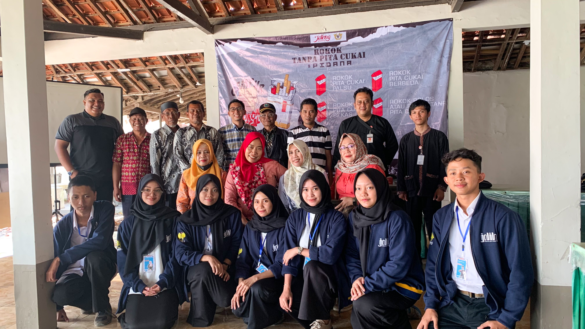

kamis, 14 juli 2023
sosialisasi gempur rokok ilegal
creator- unnesgiat5kramat
Tegal- KKN Mahasiswa UNNES Giat 5 Kabupaten Tegal bersama tim Bea Cukai Jawa Tengah Daerah Istimewa Yogyakarta melakukan kegiatan sosialisasi yang berjudul "Gempur Rokok Ilegal" di Balai Desa keramat, Kecamatan Kramat, Kabupaten Tegal, kamis (14/7/23)
Pelaksanaan sosialisasi Gempur rokok ilegal yang dilakukan di Balai Desa Kramat pada hari kamis 14 Juli 2023 pukul 09.00-selesai, terlaksana dengan sangat hikmat dengan dihadiri beberapa oleh tamu undangan seperti pihak Bea Cukai, Dosen Pembimbing Lapangan KKN, Kepala desa Kemuning, Ketua Rt/Rw desa Kemuning, perwakilan karang taruna, dan ibu-ibu PKK desa kramat, serta masyarakat desa kramat.
Kegiatan ini bertujuan untuk memberikan pemahaman kepada masyarakat tentang bahaya rokok ilegal dan dampaknya bagi kesehatan. Selain itu, kegiatan ini juga bertujuan untuk memberikan pemahaman kepada masyarakat tentang pentingnya membeli rokok yang legal dan memilki izin edar dari pemerintah.
Dalam sambutannya, Kepala Desa Kramat, Bapak Soleh menyampaikan bahwa kegiatan ini sangat bermanfaat bagi masyarakat desa kramat, karena masyarakat desa kramat masih banyak yang belum mengetahui tentang bahaya rokok ilegal. Selain itu, beliau juga berharap agar masyarakat desa kramat dapat memahami bahaya rokok ilegal dan dapat membeli rokok yang legal dan memilki izin edar dari pemerintah.
Selain itu, Kepala Desa Kramat juga berharap agar masyarakat desa kramat dapat memahami bahaya rokok ilegal dan dapat membeli rokok yang legal dan memilki izin edar dari pemerintah.
Partisipasi peserta sangat antusias dan terlihat saat pemaparan materi berlangsung dimana beberapa warga mengajukan pertanyaan kepada pemateri, salah satu pertanyaan yang diajukan yaitu " Bagaimana dampak negatif bagi kesehatan jika mengkonsumsi rokok ilegal dibandingkan dengan rokok legal? " (Kata ketua RT 4 Desa Kramat).